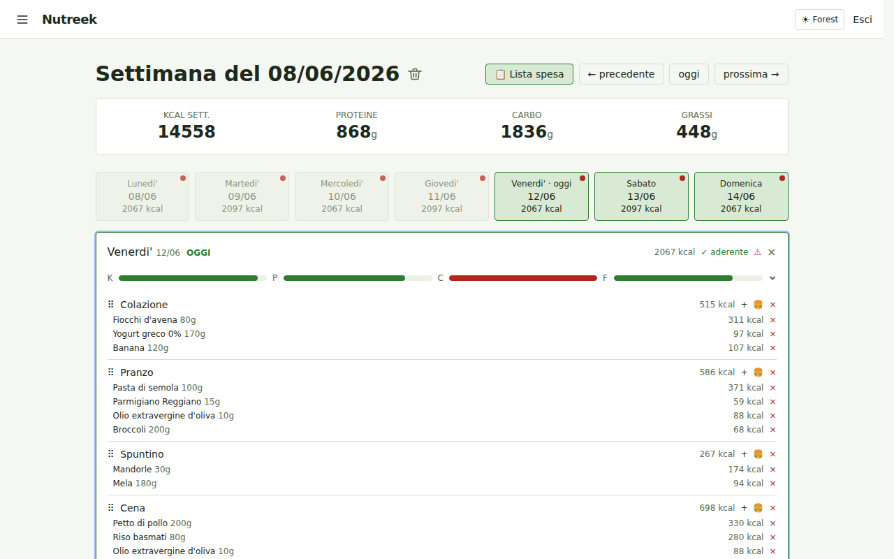
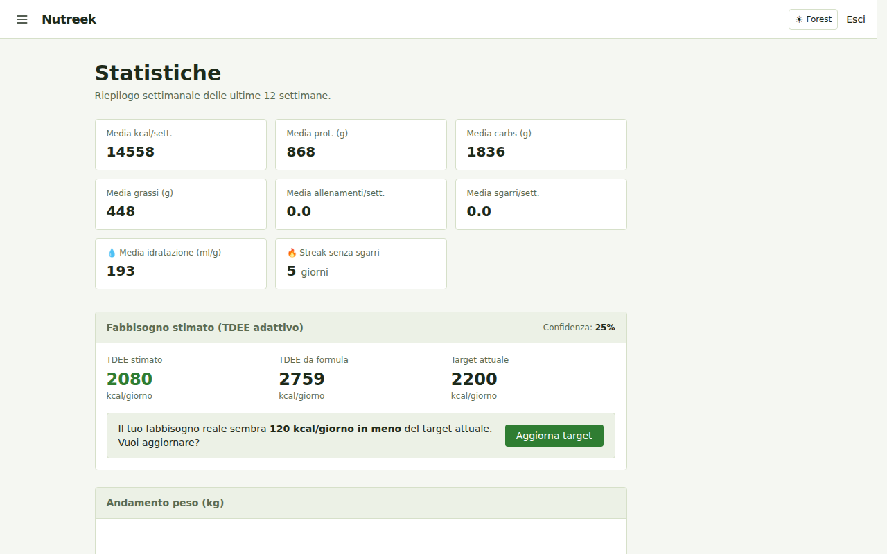
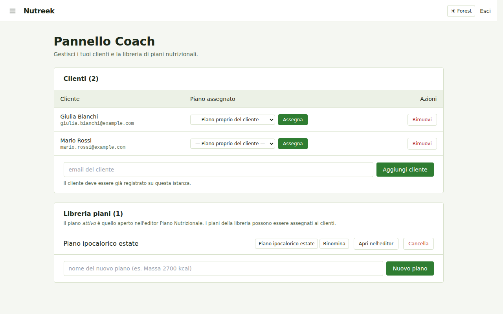

Projects › Nutreek

Nutreek
A self-hosted weekly nutrition planner — plan meals, track macros, and let adaptive TDEE keep your targets honest.
What it is
Nutreek is a self-hosted web app for managing your weekly nutrition plan. You build a week of meals from ingredients and recipes, and it computes the macros — calories, protein, carbohydrates and fat — per meal, per day and per week, with adherence bars against your targets. Ingredient data comes from a local OpenFoodFacts index (full-text search in under 50 ms, offline), so lookups stay fast and private.
It runs either natively as a single Go binary (no external dependencies) or as one Docker container — SQLite is embedded, so there is no separate database service to operate.

Features
Weekly plans
A weekly calendar with macros per meal, day and week, cheat meals, and one-click copy from the previous week.
Ingredients
Local full-text search over OpenFoodFacts (offline), barcode / URL import, and a reconciliation job that keeps local entries in sync.
Recipes & templates
Build recipes from ingredients, import them automatically from a URL (schema.org/Recipe), and save reusable weekly templates you can apply in one click.
Auto plan generator
A greedy planner builds a whole week from meal variants to hit your macro targets — the “nutritionist plan” workflow, automated.
Adaptive TDEE
Estimates your real energy needs from your weight and intake trend and suggests target updates automatically.
Weight, hydration & workouts
Daily weight and hydration tracking with trend charts, plus a workout log with calories burned and a weekly dashboard.
Coach mode
A plan library, client assignment, frozen plan history and a coach dashboard for managing multiple people.
Shopping list & REST API
Generate a shopping list from the selected week, and drive everything from a Bearer- token REST API (v1).
A closer look


Under the hood
| Backend | Go 1.25+ (chi, scs, sqlc, goose, bcrypt, nosurf) |
|---|---|
| Database | SQLite via modernc.org/sqlite — pure Go, no CGO |
| Frontend | Server-side rendering with html/template + HTMX + Tailwind CSS |
| Deploy | Static binary or a distroless Docker image (~20 MB), health-checked |
| Data ownership | Single SQLite file with optional scheduled backups and retention |